First, sampling and steering a pretrained flow model. Then, building the
same ideas from scratch on MNIST: learning to denoise, predicting continuous
velocity fields, and controlling generation with time and class conditioning.
ModelsPixNerd + custom UNet
IntegratorEuler · h = 0.02
GuidanceCFG · 7 / 5
Outputs512px RGB + 28px MNIST
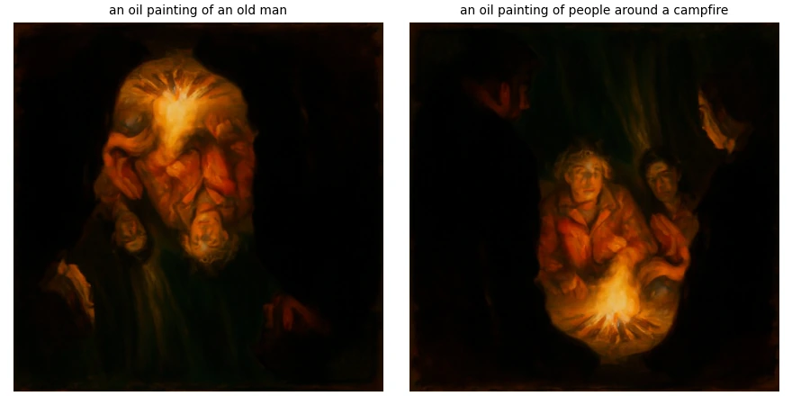
One image, two orientations · old man / campfireOne image, two scales · waterfall / skull
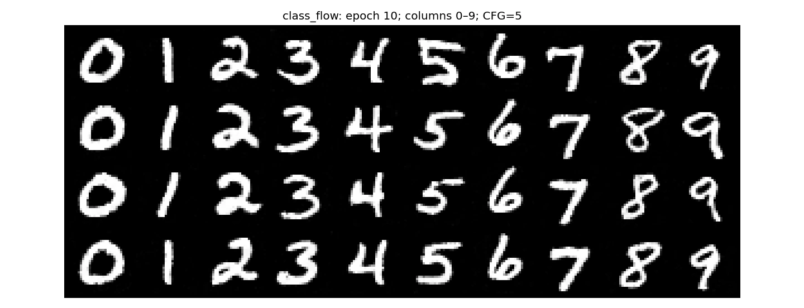
One learned vector field, ten requested classes · MNIST after epoch 10
Part A
Exploring a pretrained flow model
01
Training Paths & Sampling
Flow matching learns a time-dependent velocity field between Gaussian
noise at t = 0 and clean images at t = 1. I used one
photograph of poker chips throughout the denoising experiments so that
every method saw the same image-noise pair.
1.1
Noisy training inputs
Linear interpolation scales both endpoints. Reusing a single sampled
noise tensor isolates the effect of time: low t is almost
pure noise, while the original composition becomes increasingly legible.
xt = (1 - t)ε + tx1
Endpoint checks recover ε at time 0 and the clean
image at time 1.
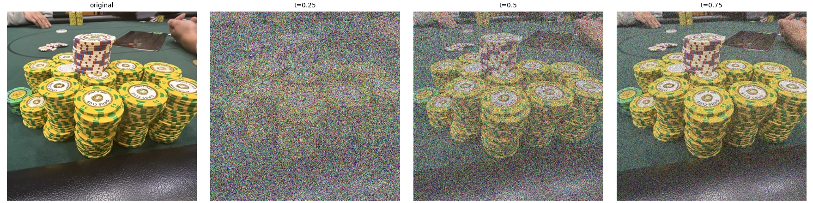
One noise sample reused at t = 0.25, 0.50, and 0.75.
1.2
Classical Gaussian denoising
Before blurring, I divide by t to restore the image
amplitude. The best MSE-selected blur becomes weaker as more clean
signal survives: σ = 8, 2, and 1 respectively. Blur suppresses
noise, but at low t it also removes nearly all structure.
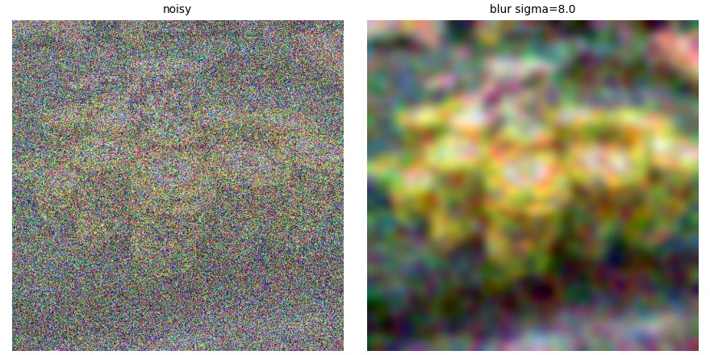
t = 0.25 · selected σ = 8
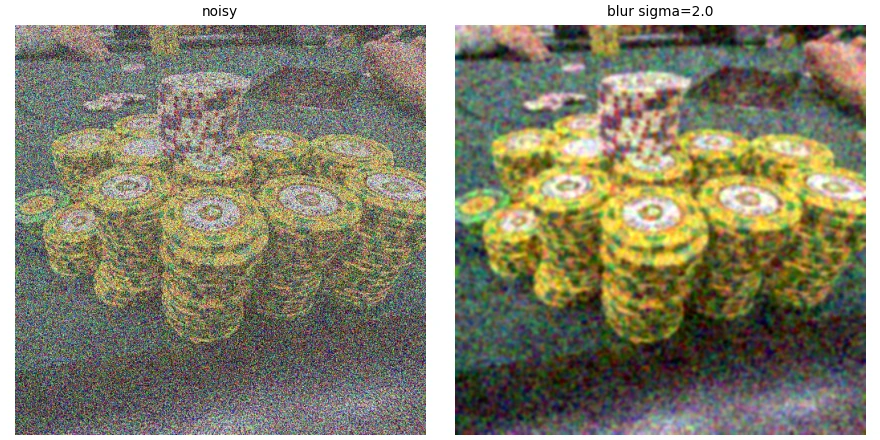
t = 0.50 · selected σ = 2
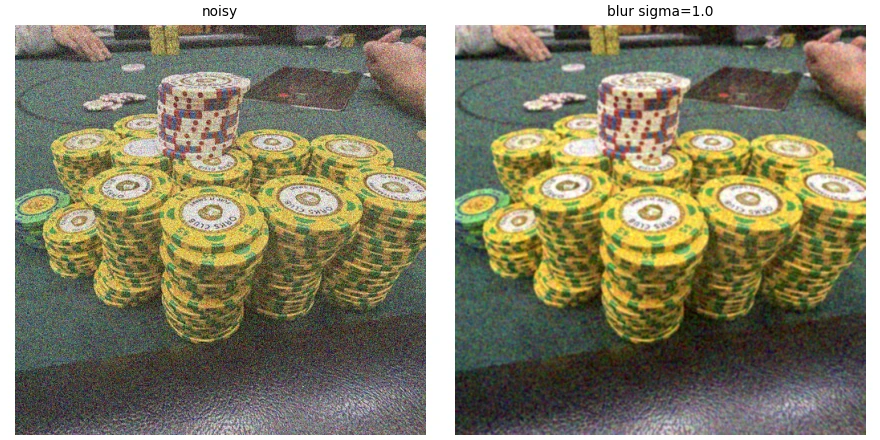
t = 0.75 · selected σ = 1
1.3
One-step denoising
A single model prediction estimates the remaining displacement to the
clean endpoint. It restores semantic structure even at t = 0.25,
where Gaussian blur cannot, though fine details are invented or softened.
x̂1 = xt + (1 - t)vθ(xt, t, c)
The model predicts velocity, so the update is added rather than subtracted.
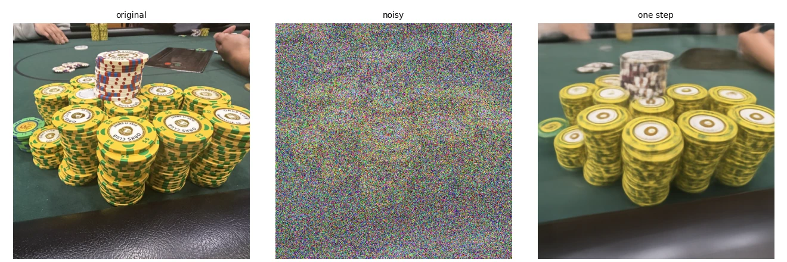
t = 0.25
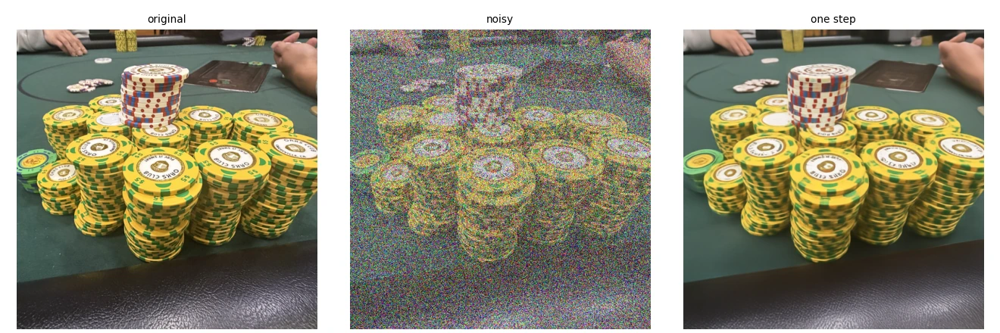
t = 0.50
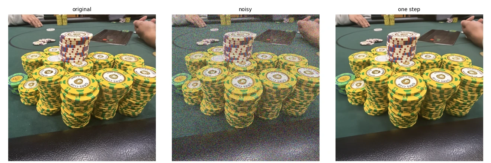
t = 0.75
1.4
Visualizing velocity
I compare the predicted update with the known update
x1 - xt. Both use one shared symmetric
RGB scale; the heatmaps show per-pixel RGB RMS error. At lower times,
the model makes larger semantic corrections and the error concentrates
around chip boundaries and printed details.
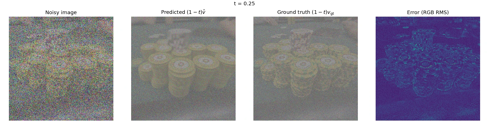
t = 0.25
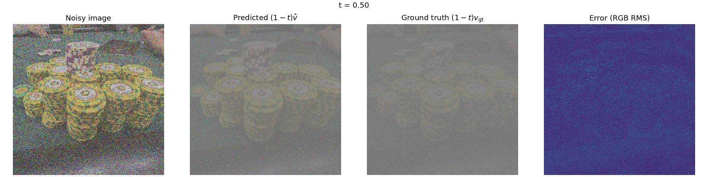
t = 0.50
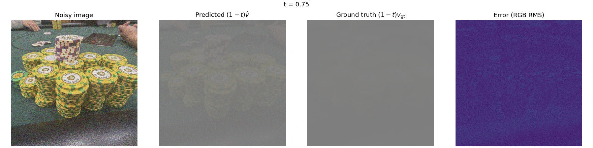
t = 0.75
1.5
Iterative Euler denoising
Euler integration recomputes the velocity after every step, following
the curved learned trajectory instead of extrapolating once. Starting
at t = 0.50, 25 updates remove noise progressively. The final
sample is sharper than the Gaussian baseline and follows the learned
image manifold more faithfully than a fixed blur.
Gaussian blur0.04487
One step0.01743
Euler0.02186
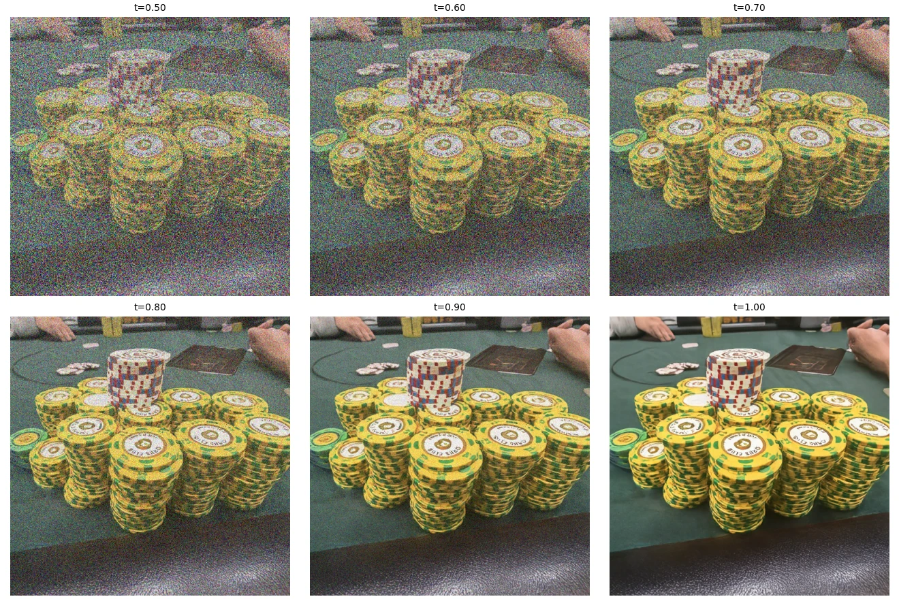
Initial state, every fifth update, and the final state.
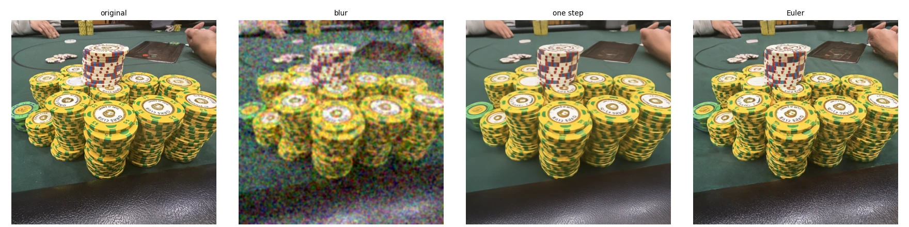
Same noisy input, four endpoints. One-step has the lowest MSE here, while Euler preserves sharper texture and structure.
1.6
Generating from noise
Starting at pure Gaussian noise and integrating 50 times produces
complete images for the generic prompt a high quality photo.
All five seeds converge toward portraits, revealing a strong subject
bias; several faces also contain visible structural artifacts.
Seed 180
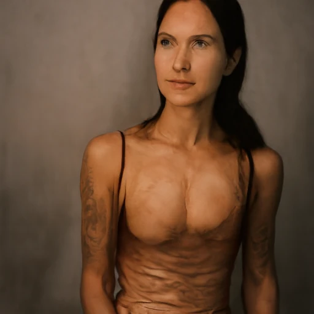
Seed 181Seed 182Seed 183Seed 184
02
Classifier-Free Guidance
Classifier-free guidance compares conditional and empty-prompt velocities
at the same image and time, then pushes farther in the direction that
distinguishes the prompt. I used the same five initial noises as the
unguided samples for a direct comparison.
vcfg = vc + w(vc - vu)
With w = 7, the portraits become cleaner, more centered, and
more photographically consistent, although their compositions are less diverse.
Seed 180 · w = 7Seed 181 · w = 7Seed 182 · w = 7Seed 183 · w = 7Seed 184 · w = 7
03
Creative Applications
The same sampler becomes an editor when it begins partway along a path
between a source image and noise. Small starting times give the model more
freedom; large starting times preserve the source. Every sweep below uses
t = 0.02, 0.04, 0.06, 0.10, 0.14, 0.25, 0.50.
3.1
Image-to-image editing
With the generic photo prompt, the Campanile progresses from a smooth
vertical object to a detailed tower. The poker stacks and house show
the same transition from semantic reinterpretation to reconstruction.
Simple drawings return to their exact geometry unusually early because
their large flat regions survive the forward process clearly.
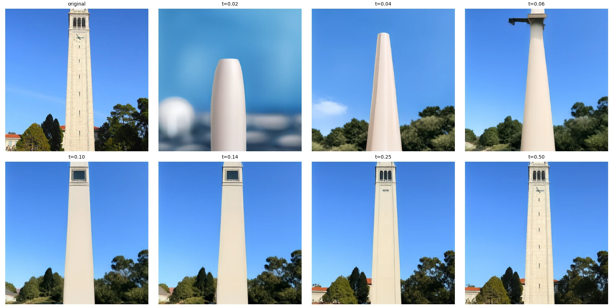
Campanile · generic photo prompt
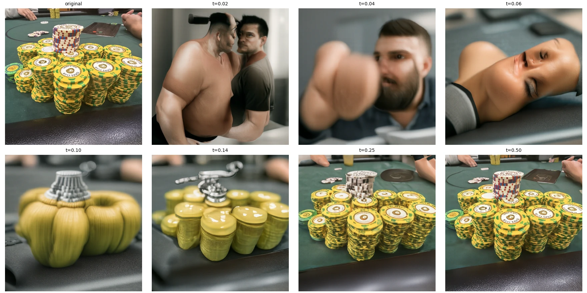
Personal test image 01 · poker-chip stacks
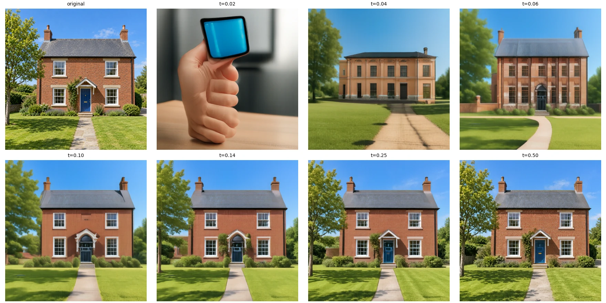
Personal test image 02 · house photographWeb-image trial · house photograph
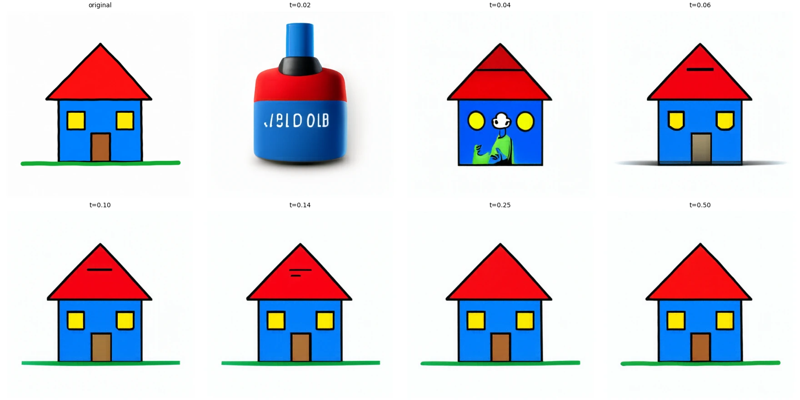
Hand drawing 01 · house
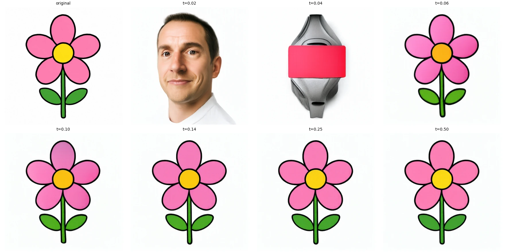
Hand drawing 02 · flower
3.2
Text-guided editing
Replacing the generic condition with a targeted prompt changes what
the sampler treats as the nearest plausible image. The prompt dominates
at low starting times; source layout, color, and fine detail progressively
take control as t rises.
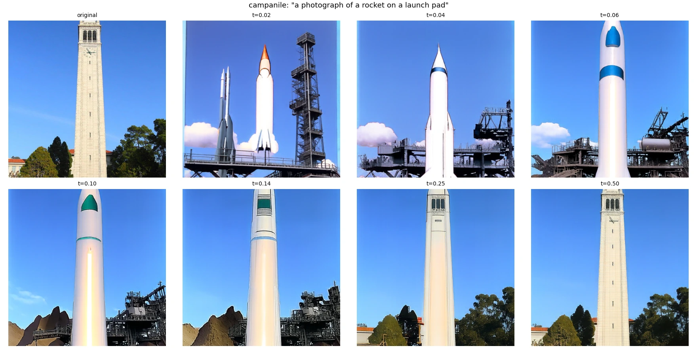
Prompt: a photograph of a rocket on a launch pad
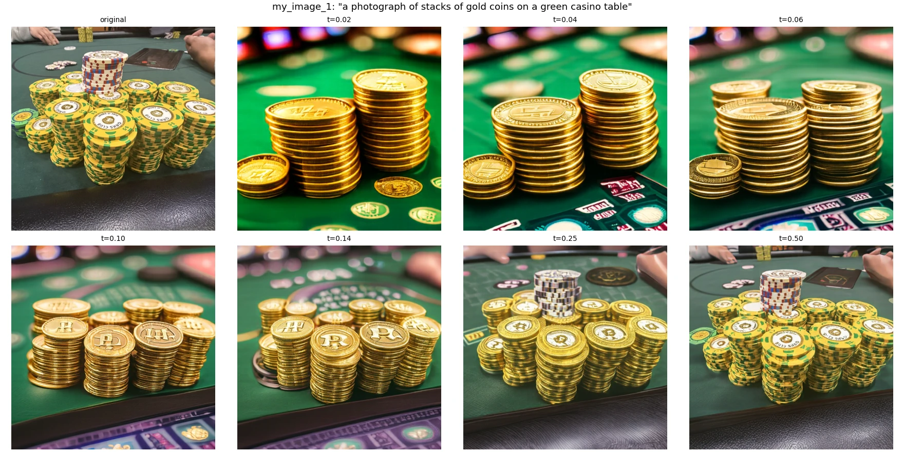
Prompt: a photograph of stacks of gold coins on a green casino table
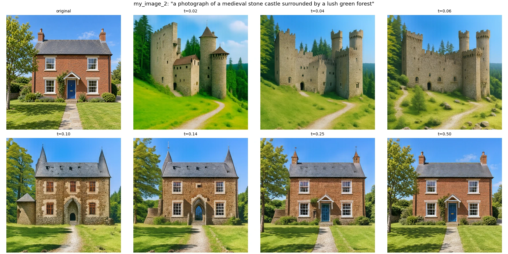
Prompt: a photograph of a medieval stone castle surrounded by a lush green forest
04
Orientation & Scale
Instead of asking one condition to control the whole velocity field, I
combine multiple predictions. Spatial transformations create images that
change under rotation; frequency decomposition creates images that change
with viewing distance.
3.3
Visual anagrams
One velocity is predicted upright. A second is predicted after a
180-degree rotation, rotated back, and averaged with the first. The dark
painterly pair reads most strongly: the upright head becomes a bright
fire surrounded by figures after rotation.
v = [va(x) + F(vb(F(x)))] / 2
F rotates both spatial axes by 180 degrees.
Oil painting · old man / people around a campfire
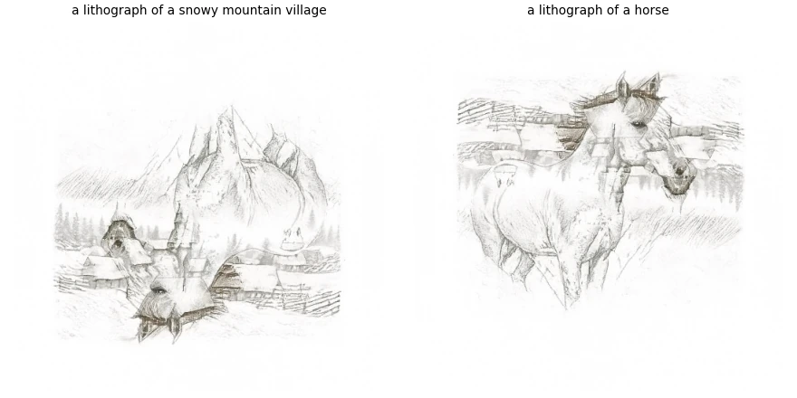
Lithograph · snowy mountain village / horse
3.4
Hybrid images
At every Euler step, I take low frequencies from the distant prompt's
velocity and high frequencies from the close prompt's velocity. A
Gaussian low-pass with σ = 16 and kernel size 265 separates the
two bands. The full-size image emphasizes texture; the reduced view
exposes the global silhouette.
v = LP(vdistant) + vclose - LP(vclose)
Both predictions use the same image, time, CFG weight, and Euler step.
Hybrid 01
Forest / cat
Close: a lithograph of a forest
Distant: a lithograph of a cat
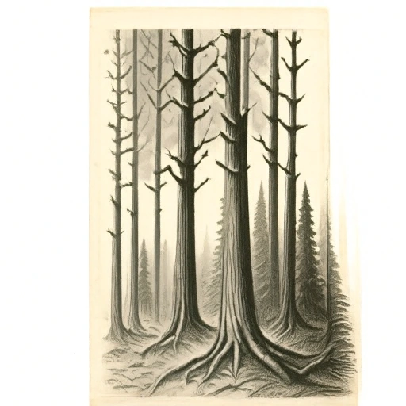
Full sizeReduced view
Hybrid 02
Waterfall / skull
Close: a lithograph of a waterfall
Distant: a lithograph of a skull
Full sizeReduced view
Part B
Training flow models from scratch
05
Learning to Denoise
Part B replaces the pretrained image model with a UNet trained directly on
MNIST. The first objective is deliberately simple: map a noisy observation
back to its clean digit in one step. This establishes the architecture and
exposes why one-step regression struggles as a generative model.
B.1.1
UNet architecture
The network uses convolutional blocks at 28, 14, and 7 pixels, a
7-to-1 spatial bottleneck, learned upsampling, and skip connections at
matching resolutions. For denoising I used 128 hidden channels and an
unconstrained single-channel output so the loss, rather than an output
clamp, determines the reconstruction.
28 × 28ConvLocal features
→
14 × 14DownContext
→
7 × 7BottleneckGlobal code
→
28 × 28Up + skipsReconstruction
B.1.2
The noising process
I added independent Gaussian noise to the same ten test digits at seven
standard deviations. At σ = 0.5, the training setting, digit
identity remains visible beneath dense high-frequency corruption; by
σ = 1.0, several strokes are difficult to distinguish.
z = x + σε, ε ∼ N(0, I)
Pixels are normalized to [0, 1]; display clipping is used only for visualization.
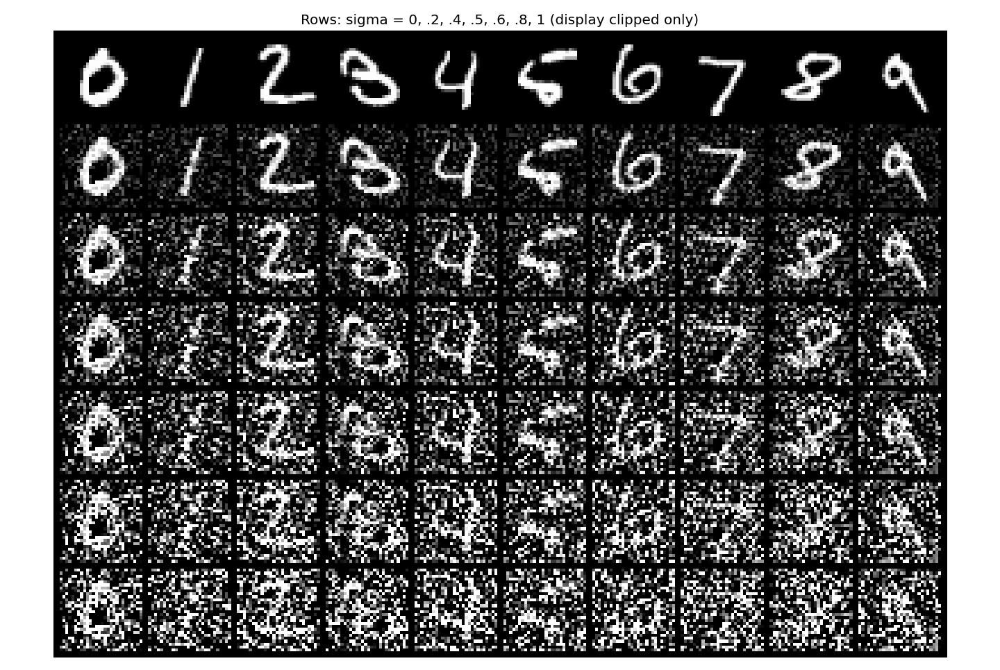
Rows from top to bottom: σ = 0, 0.2, 0.4, 0.5, 0.6, 0.8, and 1.0.
B.1.2.1
Training the one-step denoiser
Training used fresh σ = 0.5 noise for every batch, Adam at
1e-4, batch size 256, and five epochs. The preview MSE fell
from 0.01239 after epoch 1 to 0.00924 after epoch 5, and the later model
restores smooth, recognizable strokes across all ten digits.
The denoiser is most faithful near its training level. With less noise,
it slightly smooths already-clean strokes; with more noise, the outputs
remain digit-like but progressively lose identity and inherit features
from the model's learned prior.
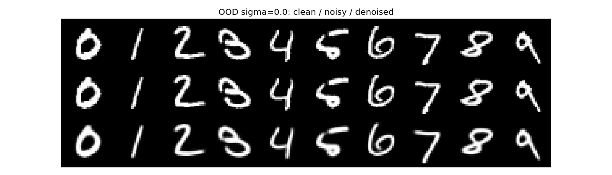
σ = 0.0σ = 0.2
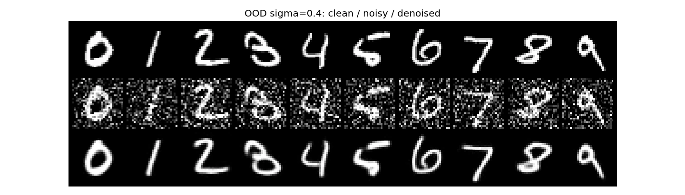
σ = 0.4σ = 0.5 · training level
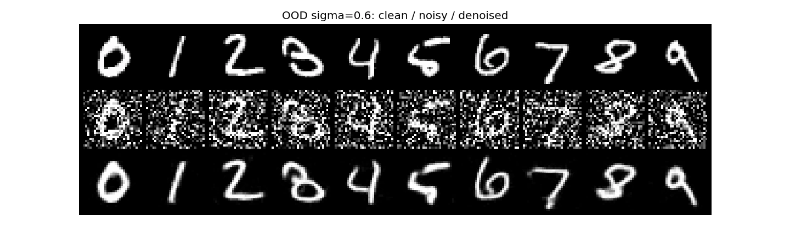
σ = 0.6
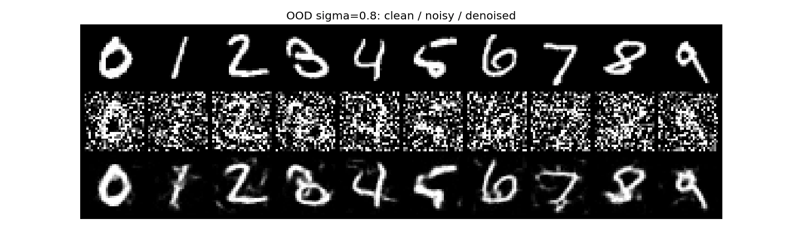
σ = 0.8
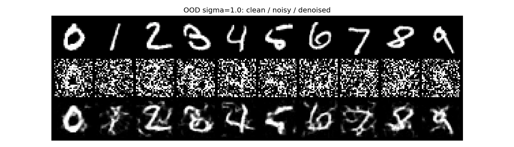
σ = 1.0
B.1.2.3
Denoising pure noise
When the input is independent of its target, there is no evidence for
which digit to reconstruct. By epoch 5, the network therefore produces
nearly identical blurry digit-shaped images rather than distinct samples.
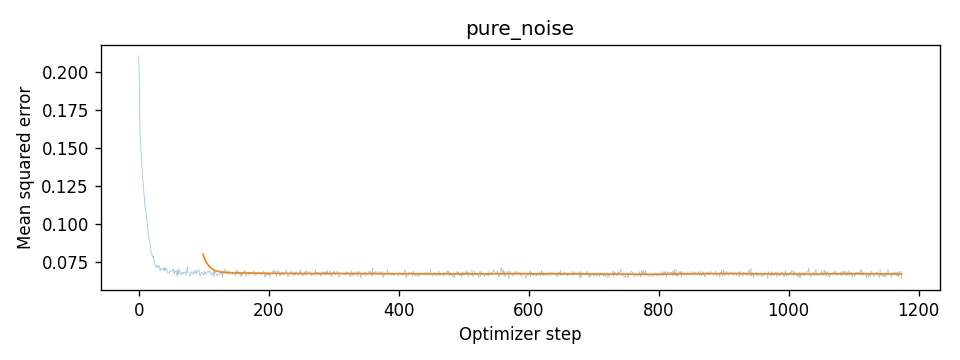
Pure-noise training loss.Training-set mean · the MSE-optimal target.
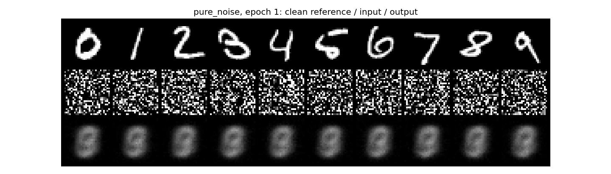
Epoch 1 · clean reference / noise / output
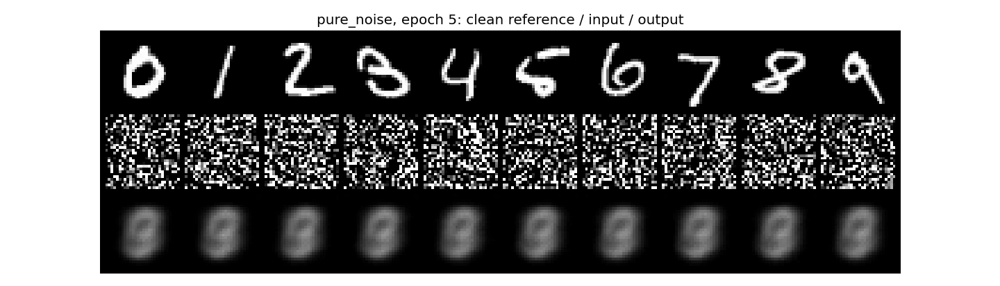
Epoch 5 · outputs collapse toward one blurred template.
Interpretation
The outputs closely resemble the mean MNIST image. Because the noise is
independent of the randomly paired target, the conditional distribution
of the target given the input is just the full data distribution. Under
squared error, the risk-minimizing prediction is its mean, explaining the
shared soft, superimposed appearance instead of ten distinct digits.
06
Flow Matching From Scratch
One-step regression averages ambiguous targets. Flow matching instead
learns a velocity at every point along a continuous path from Gaussian
noise to data, allowing many small, state-dependent updates to construct
a sample.
xt = (1 - t)x0 + tx1
The target velocity is constant along each training pair:
u(xt, t) = x1 - x0. At sampling time,
Euler integration repeatedly reevaluates the learned field.
B.2.1 - B.2.3
Time-conditioned generation
Two small fully connected blocks embed continuous time and modulate the
bottleneck and first decoder stage. I trained the 64-channel UNet for ten
epochs with Adam at 1e-2 and exponential decay, then sampled
with 50 Euler steps. The mean epoch loss fell from 0.17793 to 0.09321.
Hidden channels64
Euler steps50
Final mean loss0.09321
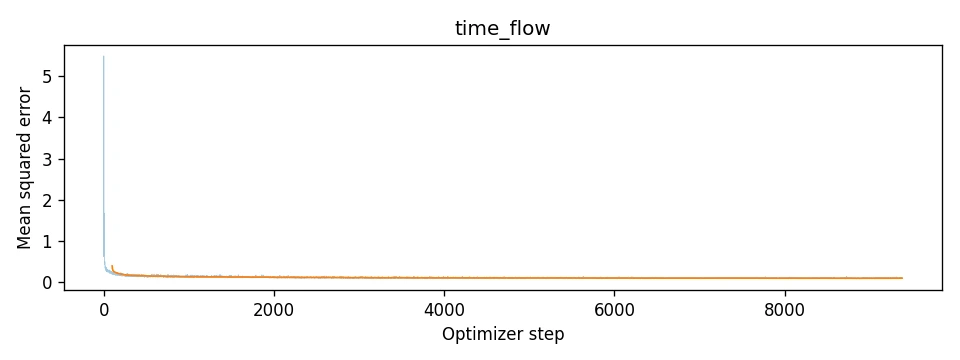
Time-conditioned flow loss.
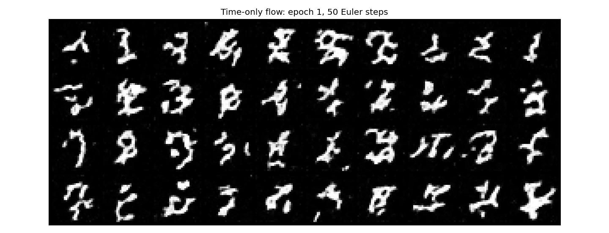
Epoch 1
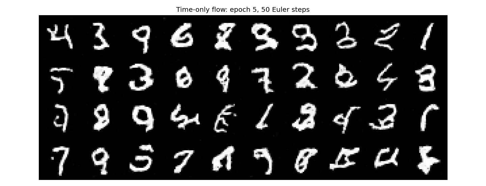
Epoch 5
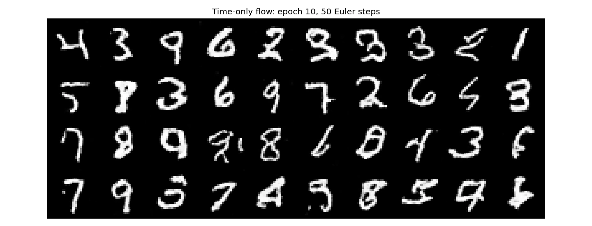
Epoch 10
Observed progression
Digit-like strokes already emerge after one epoch. By epochs 5 and 10,
most samples are recognizable and cleaner, though this unconditional
model still produces ambiguous hybrids and uneven class coverage because
it must represent every digit with time as its only conditioning signal.
B.2.4 - B.2.6
Class conditioning and guidance
A one-hot class vector modulates the same decoder stages as time. During
training, class conditioning is dropped for 10% of samples. During
generation, conditional and unconditional velocities are combined with
guidance scale 5.0 and integrated for 300 steps. Class control makes the
requested columns immediately visible and improves convergence.
v = vu + 5(vc - vu)
Each column requests digits 0 through 9; each row uses a different initial noise.
Class dropout10%
Guidance scale5.0
Final mean loss0.08468
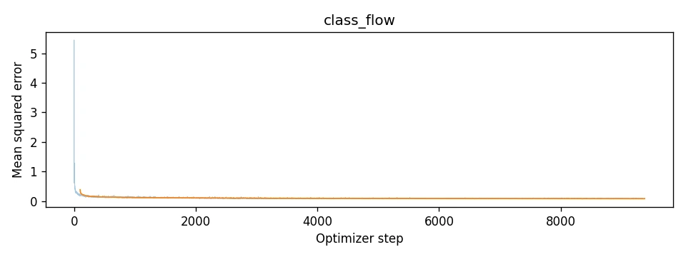
Class-conditioned flow loss.
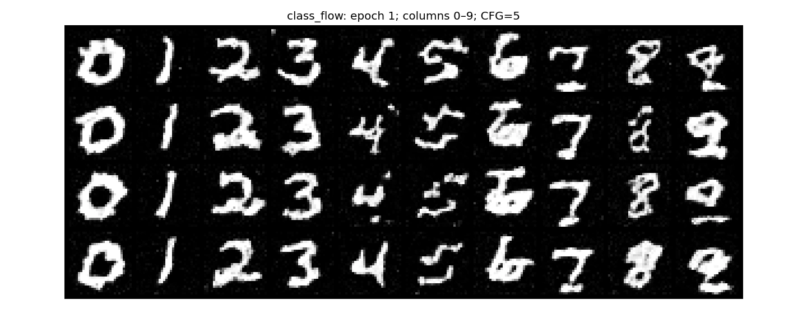
Epoch 1 · columns 0-9
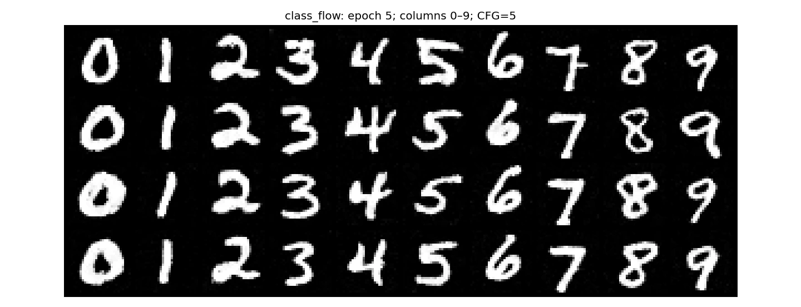
Epoch 5 · columns 0-9Epoch 10 · columns 0-9
B.2.6 · Scheduler ablation
Can the scheduler go away?
I trained a fresh model with constant Adam learning rate
1e-3 instead of beginning at 1e-2 and decaying by
one order of magnitude over ten epochs. The seed, data order, model,
batch size, conditioning dropout, and sampling settings remain fixed.
Scheduled start1e-2
Constant rate1e-3
Constant final loss0.08490
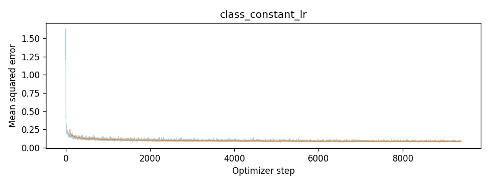
Constant-learning-rate loss.
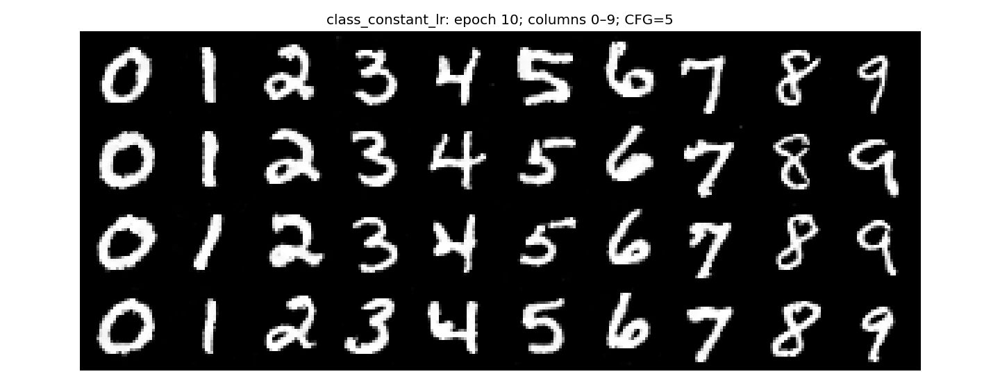
Constant 1e-3 · epoch 10
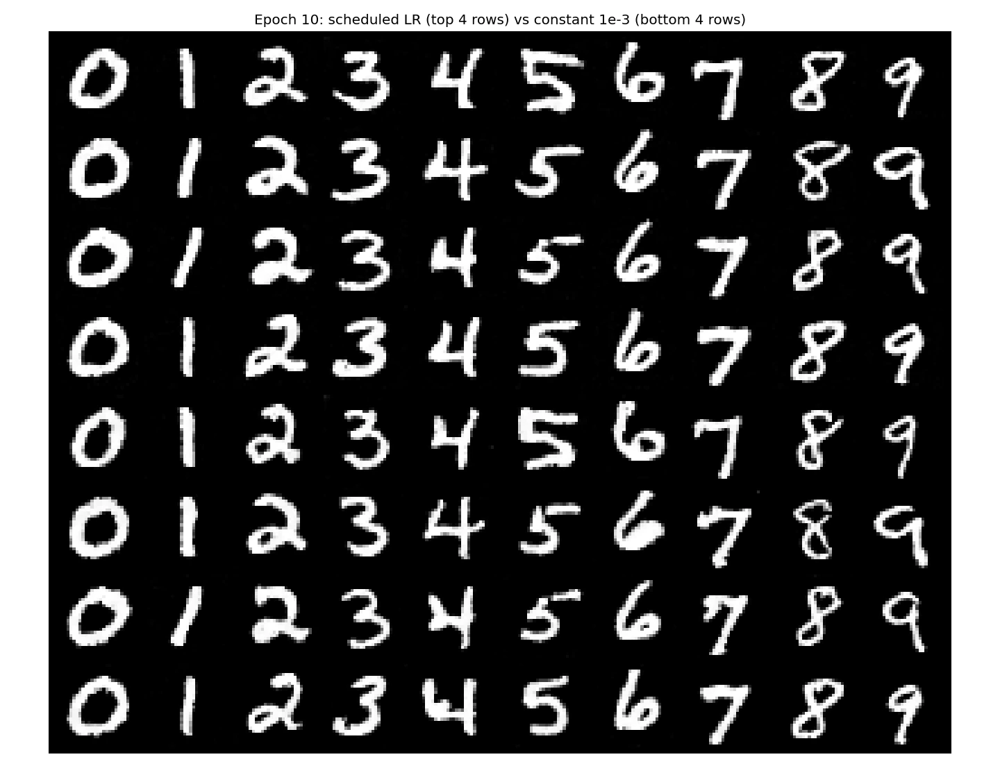
Scheduled model in the top four rows; constant-rate model in the bottom four.
Result
Lowering the fixed learning rate preserved comparable epoch-10
performance. Both grids are legible and class-correct, with similar
stroke quality and variation. The smaller constant step compensates for
removing decay by avoiding the overly aggressive late-training updates
that a fixed 1e-2 rate would produce.
07
What the Velocity Carries
The most surprising part of the project was seeing the same mathematical
object from both sides. With PixNerd, I manipulated a rich pretrained
velocity field; with MNIST, I watched one emerge from noisy data. In both
cases, generation depends on repeatedly asking what direction makes sense
from the current state, time, and condition.
Time is an edit dial
Early starts favor the model prior; late starts preserve source geometry and detail.
Guidance trades diversity
CFG improves coherence and prompt alignment while narrowing the visual outcomes.
Integration matters
Recomputing velocity follows the learned path instead of assuming one straight extrapolation.
Perception is conditional
Orientation and spatial frequency can partition one image into multiple readings.
Ambiguity becomes an average
Without informative input or iterative structure, squared-error regression collapses many possible targets into their mean.
Conditioning organizes the field
Class labels turn an uneven unconditional generator into ten controllable, rapidly converging modes.